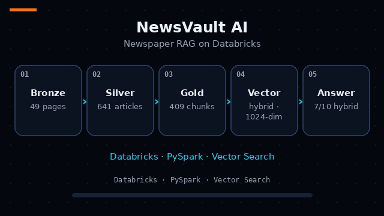

NewsVault AI
Newspaper PDFs are pictures of pages: headlines, multi-column stories and advertisements share one surface with no reading order. Plain text extraction scrambles several stories into one stream, so any question-answering built on it retrieves fragments of the wrong articles.
- 1Parse — ai_parse_document reads the two newspaper PDFs into positioned elements: 49 pages, 4,058 elements with bounding boxes and types.
- 2Reconstruct — spatial, column-overlap rules over the bounding boxes rebuild the articles the page actually contains: 641 Silver articles, 222 of them RAG-eligible.
- 3Chunk — article-aware chunking that never crosses an article boundary, headline attached to every chunk: 409 Gold chunks.
- 4Embed & index — chunks embedded with databricks-bge-large-en (1024-dim) into a Vector Search Delta Sync index.
- 5Answer — hybrid retrieval feeds Llama 3.3 70B, which answers from the retrieved chunks with citations — or refuses when the evidence isn’t there.
The build treats spatial article reconstruction as the most critical layer — every later stage inherits its errors — so elements are grouped by column-overlap geometry before anything else happens. Chunking is article-aware by rule: a chunk never crosses an article boundary and carries its headline, so retrieval returns whole stories, not fragments. A one-chunk probe verified the 1024-dimension embeddings before the full run, nothing is written until an accounting check passes, and the answering app (Phase 10) is deliberately held until the retrieval gaps behind the three refused questions are fixed — the daily pipeline runs on a manual trigger in the meantime.
